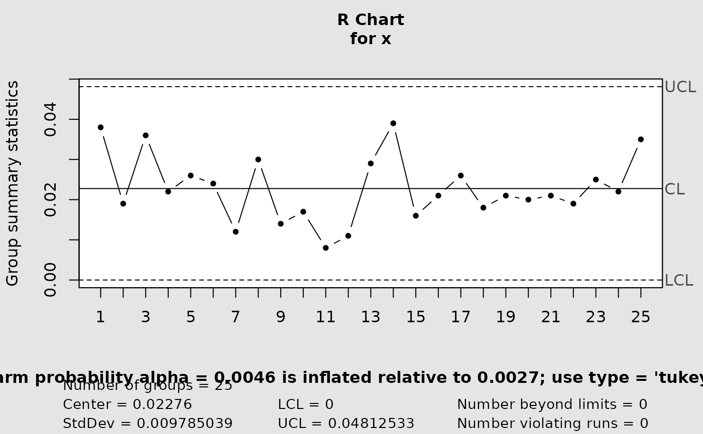
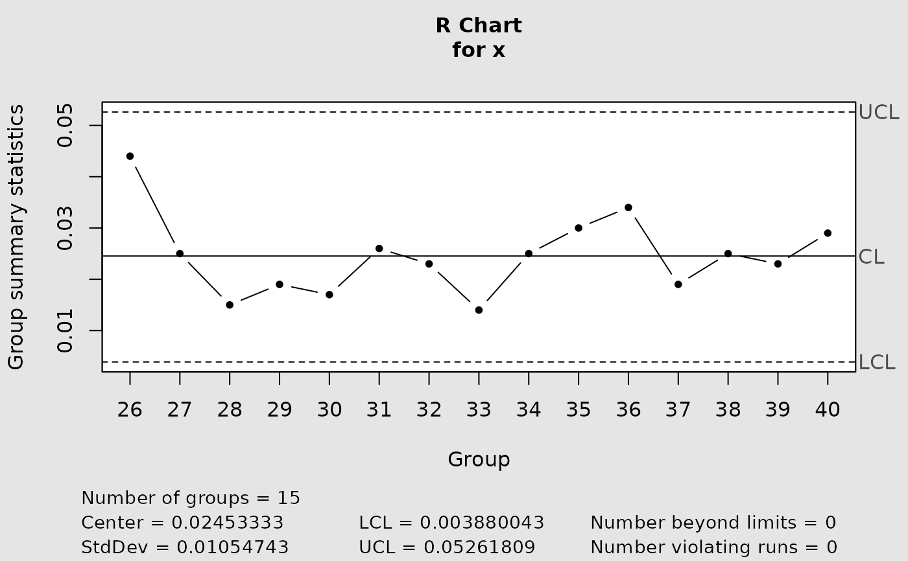

Build a control chart for subgroup ranges using either the conventional three-sigma approximation or exact probability limits from the distribution of the relative range \(W = R / \sigma\).
Usage
cchart.R(x, n, type = c("norm", "tukey"), y = NULL)Arguments
- x
Phase II subgroup data accepted by
qcc::qcc()for an"R"chart. Rows represent subgroups and columns observations within subgroups.- n
Integer subgroup size, at least 2. It is used to evaluate the actual false-alarm probability of the conventional chart and to obtain Tukey relative-range quantiles for the exact chart.
- type
Either
"norm"for the conventional three-sigma chart or"tukey"for exact equal-tail probability limits.- y
Phase I subgroup data used to estimate \(\sigma\) through
qcc::sd.R()whentype = "tukey". It must be supplied for that method and have the same subgroup structure asx.
Value
Invisibly, the "qcc" object returned by qcc::qcc().
The function also draws the chart. For type = "norm", a message is
added below the plot showing the actual false-alarm probability returned by
alpha.risk(n).
Details
For type = "norm", limits are delegated to the standard
qcc range-chart implementation. For type = "tukey", the
lower and upper limits are
$$\hat\sigma F_W^{-1}(0.00135;n)$$
and
$$\hat\sigma F_W^{-1}(0.99865;n),$$
where \(\hat\sigma\) is estimated from y and the quantiles are
obtained with stats::qtukey().
Phase convention
The exact chart treats y as Phase I reference data and x as
the plotted monitoring data. The conventional chart uses the standard
estimation behavior of qcc::qcc() on x.
Errors
An error is raised for an unsupported type, for n < 2, or
when y is omitted for the exact chart. Additional data validation is
performed by qcc::qcc() and qcc::sd.R().
References
Barbosa, E. P., Gneri, M. A., and Meneguetti, A. (2013). Range control charts revisited: Simpler Tippett-like formulae, its practical implementation, and the study of false alarm. Communications in Statistics - Simulation and Computation, 42(2), 247–262. doi:10.1080/03610918.2011.639967 .
Examples
data(pistonrings)
conventional <- cchart.R(pistonrings[1:25, ], 5)

exact <- cchart.R(
pistonrings[26:40, ], 5,
type = "tukey",
y = pistonrings[1:25, ]
)
